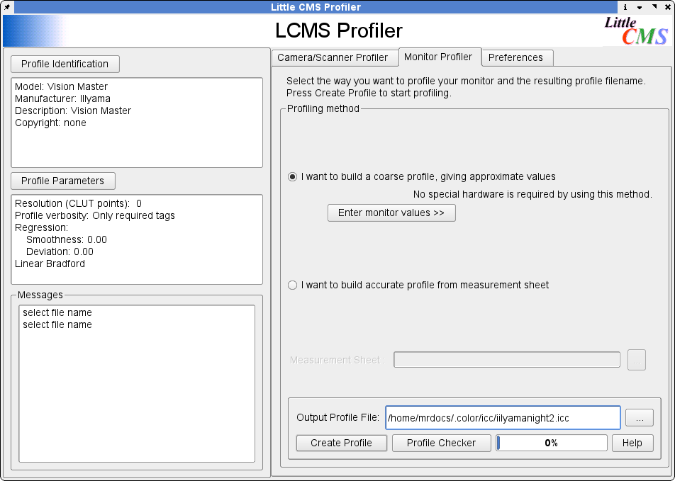

For those running BSD, Linux or Unix Lprof is an essential tool for making color management work reliably in Scribus. Why so ?
Lprof is the only graphical tool for creating ICC monitor profiles. It also works on Windows and soon, MacOSX. Very simply Lprof is a tool for creating an ICC profile of your monitor which helps make color managed previews more accurate. Think of a monitor profile as a set of glasses which magically transform your eyes to see with perfect color balance. Within Scribus a correct monitor profile can make a big difference in viewing accurately how your print or PDF will appear on a postscript printer or when printed commercially. Without an individual profile of your monitor - no two monitors are alike - you have no real assurance the color transforms will be anywhere near close when you are for example sending PDFs to a printer.
Lprof has a simple step by step method to walk you through creating a profile of your monitor which then can be used in Scribus. You should take the 5 minutes it takes to create a profile and then add this to your Scribus Color management preferences. Lprof can also create profiles for your scanner or digital camera. A look at the Lprof documentation will give you a more detailed understanding of its capabilities.
On MacOSX, you can also use the native built in ColorSync applet to create a monitor profile. On Windows, if you have installed Photoshop, Indesign or Illustrator, Adoboe Gamma performs a similar, if more simplistic method of creating a monitor profile.
|  |